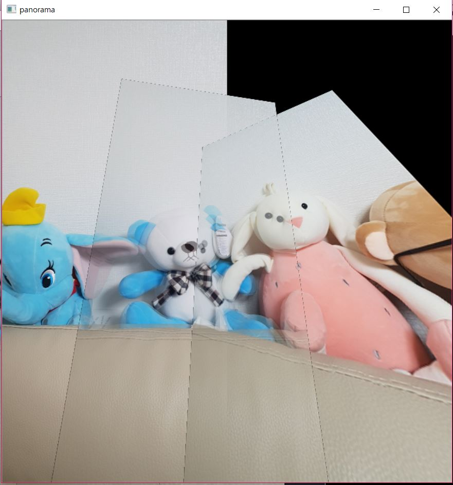
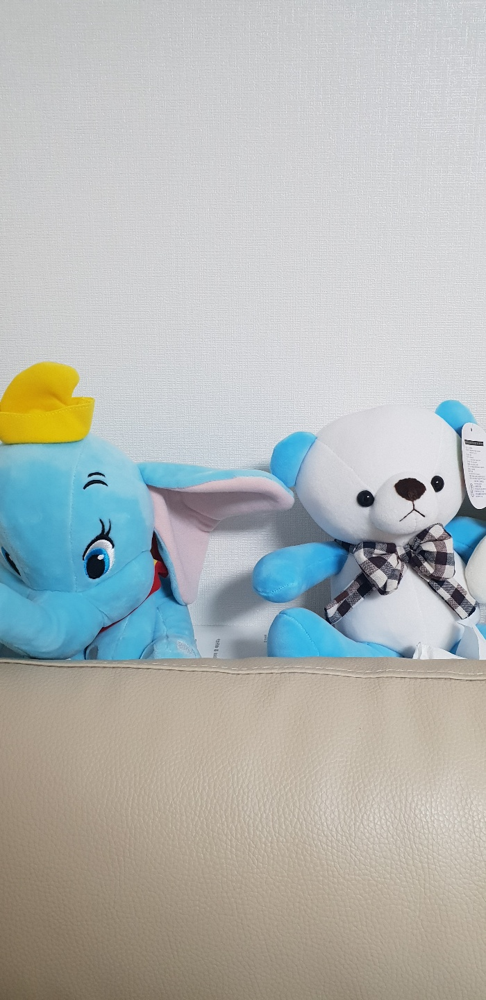
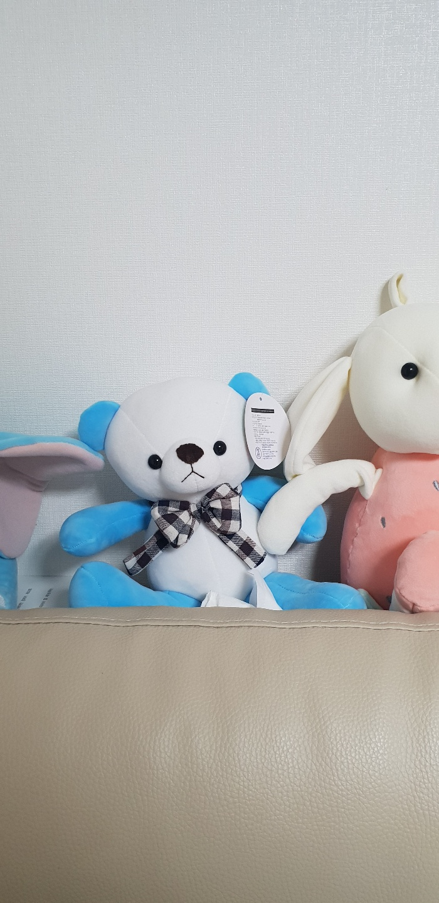
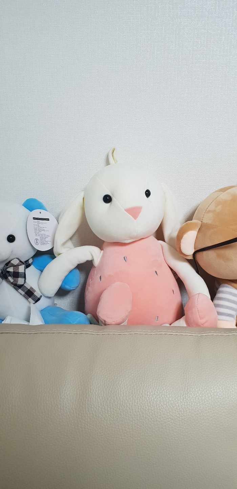
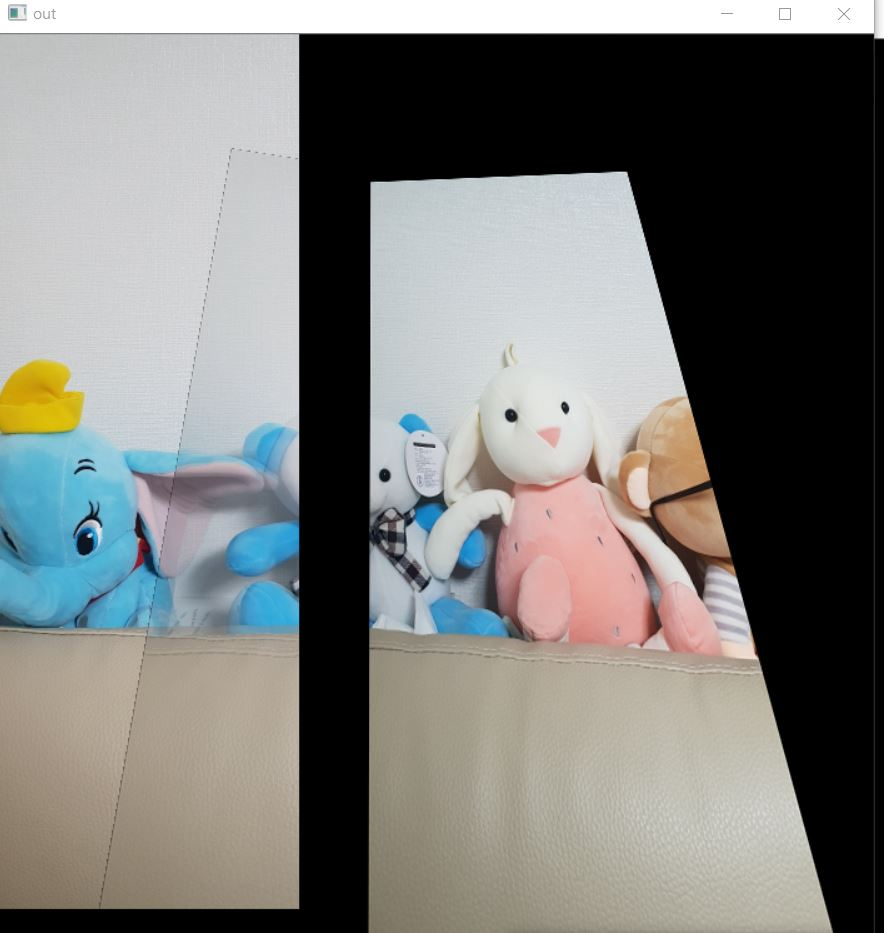

코드0완성 이미지  코드2완성 이미지
 개선해야할 부분
개선해야할 부분이미지가 왼쪽에서 오른쪽으로 이어지는 이미지만 가능하다. 순서를 지정해주어야 한다. 논문을 이해하지 못했으므로 일단 넘어간다
- 초기 이미지   
- 실행과정
- M이미지의 변환 이미지
- M이미지 변환과 L의 파노라마 이미지
- R과 파노라마1번의 all_match
- 매칭을 기준으로 변환한 R이미지
- R변환을 합친 파노라마


Mat의 빈영역을 없애기 위해 평균영상을 사용했다.
1 2 3 4 5 6 7 8 9 10 11 12 13 14 15 16 17 18 19 20 21 22 23 24 25 26 27 28 29 30 31 32 33 34 35 36 37 38 39 40 41 42 43 44 45 46 47 48 49 50 51 52 53 54 55 56 57 58 59 60 61 62 63 64 65 66 67 68 69 70 71 72 73 74 75 76 77 78 79 80 81 82 83 84 85 86 87 88 89 90 91 92 93 94 95 96 97 98 99 100 101 102 103 104 105 106 107 108 109 110 111 112 113 114 115 116 117 118 119 120 121 122 123 124 125 126 127 128 129 130 131 132 133 134 135 136 137 138 139 140 141 142 143 144 145 146 147 148 149 150 151 152 153 154 155 156 157 158 159 160 161 162 163 164 165 166 167 168 169 170 171 172 173 174 175 176 177 178 179 180 181 182 183 184 185 186 187 188 189 190 191 192 193 194 195 196 197 198 199 200 201 202 203 204 205 206 207 208 209 210 211 212 213 214 215 216 217 218 219 220 221 222 223 224 225 226 227 228 229 230 231 232 233 234 235 236 237 238 239 240 241 242 243 244 245 246 247 248 249 250 251 252 253 254 255 256 257 258 259 260 261 262 263 264 265 266 267 268 269 270 271 272 273 274 275 276 | //특징점 추출->기술->짝이 될 이미지 찾기, 이미지 변환->블랜딩 #include <iostream> #include <stdio.h> #include <opencv2/opencv.hpp> #include <opencv2/xfeatures2d/nonfree.hpp> #include <opencv2/features2d/features2d.hpp> using namespace cv; using namespace std; //두 Mat의 평균 픽셀 구하는 함수 Mat avgImage(Mat &img1, Mat &img2) { Mat out = img1.clone(); int col, row; if (img1.cols < img2.cols) col = img2.cols; else col = img1.cols; if (img1.rows < img2.rows) row = img2.rows; else row = img1.rows; resize(out, out, Size(col, row)); out = Scalar(0); Mat img1big = out.clone(); Mat img2big = out.clone(); for (int y = 0; y < img1.cols; y++) { for (int x = 0; x < img1.rows; x++) { img1big.ptr<uchar>(x)[img1big.channels()*y] = img1.ptr<uchar>(x)[img1.channels()*y]; img1big.ptr<uchar>(x)[img1big.channels()*y+1] = img1.ptr<uchar>(x)[img1.channels()*y+1]; img1big.ptr<uchar>(x)[img1big.channels()*y+2] = img1.ptr<uchar>(x)[img1.channels()*y+2]; } } for (int y = 0; y < img2.cols; y++) { for (int x = 0; x < img2.rows; x++) { img2big.ptr<uchar>(x)[img2big.channels()*y] = img2.ptr<uchar>(x)[img2.channels()*y]; img2big.ptr<uchar>(x)[img2big.channels()*y + 1] = img2.ptr<uchar>(x)[img2.channels()*y + 1]; img2big.ptr<uchar>(x)[img2big.channels()*y + 2] = img2.ptr<uchar>(x)[img2.channels()*y + 2]; } } for (int y = 0; y < col; y++) { for (int x = 0; x < row; x++) { if (img1big.ptr<uchar>(x)[img1big.channels()*y] && img1big.ptr<uchar>(x)[img1big.channels()*y + 1]&& img1big.ptr<uchar>(x)[img1big.channels()*y + 2]&& img2big.ptr<uchar>(x)[img2big.channels()*y]&& img2big.ptr<uchar>(x)[img2big.channels()*y+1]&& img2big.ptr<uchar>(x)[img2big.channels()*y+2]) { //둘다 검정이 아닐때 평균 out.ptr<uchar>(x)[out.channels()*y] = (img1big.ptr<uchar>(x)[img1big.channels()*y] + img2big.ptr<uchar>(x)[img2big.channels()*y]) / 2; out.ptr<uchar>(x)[out.channels()*y + 1] = (img1big.ptr<uchar>(x)[img1big.channels()*y + 1] + img2big.ptr<uchar>(x)[img2big.channels()*y + 1]) / 2; out.ptr<uchar>(x)[out.channels()*y + 2] = (img1big.ptr<uchar>(x)[img1big.channels()*y + 2] + img2big.ptr<uchar>(x)[img2big.channels()*y + 2]) / 2; } else if (!(img1big.ptr<uchar>(x)[img1big.channels()*y] || img1big.ptr<uchar>(x)[img1big.channels()*y + 1] || img1big.ptr<uchar>(x)[img1big.channels()*y + 2] || img2big.ptr<uchar>(x)[img2big.channels()*y] || img2big.ptr<uchar>(x)[img2big.channels()*y + 1] || img2big.ptr<uchar>(x)[img2big.channels()*y + 2])) { //둘다 검정일때 검정 out.ptr<uchar>(x)[out.channels()*y] = 0; out.ptr<uchar>(x)[out.channels()*y + 1] = 0; out.ptr<uchar>(x)[out.channels()*y + 2] = 0; } else { if (img1big.ptr<uchar>(x)[img1big.channels()*y] || img1big.ptr<uchar>(x)[img1big.channels()*y + 1] || img1big.ptr<uchar>(x)[img1big.channels()*y + 2]) {//img1이 색깔 out.ptr<uchar>(x)[out.channels()*y] = img1big.ptr<uchar>(x)[img1big.channels()*y]; out.ptr<uchar>(x)[out.channels()*y + 1] = img1big.ptr<uchar>(x)[img1big.channels()*y + 1]; out.ptr<uchar>(x)[out.channels()*y + 2] = img1big.ptr<uchar>(x)[img1big.channels()*y + 2]; } else { out.ptr<uchar>(x)[out.channels()*y] = img2big.ptr<uchar>(x)[img2big.channels()*y]; out.ptr<uchar>(x)[out.channels()*y + 1] = img2big.ptr<uchar>(x)[img2big.channels()*y + 1]; out.ptr<uchar>(x)[out.channels()*y + 2] = img2big.ptr<uchar>(x)[img2big.channels()*y + 2]; } } } } imshow("out", out); waitKey(0); return out; } //이미지에서 특징점 찾는 함수 vector<KeyPoint> findkeypoint(Mat img) { //이미지에서 특징점 찾기 (SIFT로) vector<KeyPoint> arrayKey; double nMinHessian = 400.; Ptr<xfeatures2d::SiftFeatureDetector> Detector = xfeatures2d::SiftFeatureDetector::create(nMinHessian); Detector->detect(img, arrayKey); return arrayKey; } //또 다른 파노라마 코드 //https://stackoverflow.com/questions/23492878/image-disappear-in-panorama-opencv Mat deleteBlackZone(const Mat &image) { Mat resultGray; Mat result; //image를 result에 image.copyTo(result); //image를 흑밸으로 바꿔서 resultGray에 cvtColor(image, resultGray, CV_RGB2GRAY); //이미지를 매끄럽게 하는 함수 //imshow("beforBlur", resultGray); medianBlur(resultGray, resultGray, 3); //imshow("afterBlur", resultGray); // 첫번째 매개변수 : 원본 이미지, 두번째 : 필터를 거친 이미지 세번째 : 작은영역의 사이즈 Mat resultTh; vector<vector<Point> > contours; vector<Vec4i> hierarchy; //The function is typically used to get a bi-level (binary) image out of a grayscale image // threshold(resultGray, resultTh, 임계값, 1, 0);이렇게 바꾸나?? //or for removing a noise, that is, filtering out pixels with too small or too large values. //threshold(input배열, output배열, 임계값, 배열의 최대 수, 타입); //타입에 대한 정보https://docs.opencv.org/3.4.3/d7/d1b/group__imgproc__misc.html#gaa9e58d2860d4afa658ef70a9b1115576 threshold(resultGray, resultTh, 1, 255, 0); //영상 내에서 연결 컴포넌트의 외곽선을 추출하는 함수 //CV_RETR_EXTERNAL : 외부 외곽선 검색 //CV_CHAIN_APPROX_SIMPLE : 마지막 점이 수평 또는 수직, 대각선 외곽선에 포함됨 //findContours(분석할 대상, 감지된외곽선, hierarchy, CV_RETR_EXTERNAL, CV_CHAIN_APPROX_SIMPLE); findContours(resultTh, contours, hierarchy, CV_RETR_EXTERNAL, CV_CHAIN_APPROX_SIMPLE); Mat besta = Mat(contours[0]); //imshow("besta", besta); //rect는 사각형 표현 클레스이다. //http://kgh1994.tistory.com/4 Rect a = boundingRect(besta); Mat half(result, a); return half; } //이미지 2개 붙이고 붙은 사진을 return Mat addtwo(Mat matbody, Mat matarm) { //imshow("startfrombody", matbody); //imshow("startfromarm", matarm); //계산 속도를 위해 흑백으로 Mat matgraybody, matgrayarm; cvtColor(matbody, matgraybody, CV_RGB2GRAY); cvtColor(matarm, matgrayarm, CV_RGB2GRAY); //두 이미지에서 keypoint 검출 vector<KeyPoint> keyPointbody, keyPointarm; keyPointbody = findkeypoint(matgraybody); keyPointarm = findkeypoint(matgrayarm); //두 이미지에서 키포인트를 기술하기 Ptr<xfeatures2d::SiftDescriptorExtractor> Extractor = xfeatures2d::SiftDescriptorExtractor::create(); Mat matExtractorbody, matExtractorarm; Extractor->compute(matbody, keyPointbody, matExtractorbody); Extractor->compute(matarm, keyPointarm, matExtractorarm); //키포인트를 매칭하고 매칭정보 DMatch에 저장 후 good_match만 골라낸다. //ransac이 badmatch는 걸러주는거 아닌가?? 왜 goodmatch를 고른다음에 다시하지? FlannBasedMatcher Matcher; vector<DMatch> matches; //cv::DescriptorMatcher::match(쿼리, 트레인) Matcher.match(matExtractorbody, matExtractorarm, matches); //신뢰할 수 있는 매치 골라내기 double dMinDist = 100; double dMaxDist = 0; for (int i = 0; i < matches.size(); i++) { double dDistance = matches[i].distance; if (dDistance < dMinDist) dMinDist = dDistance; if (dDistance > dMaxDist) dMaxDist = dDistance; } printf("-- Max iddst : %f \n", dMaxDist); printf("-- Min iddst : %f \n", dMinDist); vector<DMatch> good_matches; for (int i = 0; i < matches.size(); i++) { if (matches[i].distance < dMinDist * 5) { good_matches.push_back(matches[i]); } } Mat matGoodMatches1; drawMatches(matbody, keyPointbody, matarm, keyPointarm, good_matches, matGoodMatches1, Scalar::all(-1), Scalar(-1), vector<char>(), DrawMatchesFlags::DEFAULT); //imshow("all-matches", matGoodMatches1); //신뢰할 수 있는 매칭쌍 good_match를 이용해 변환행렬을 찾자 //findhomography는 ransac알고리즘으로 변환행렬을 찾아준다 //변환행렬의 shape에 대해 궁금... 반환형과 if반환형이 정해져있다면 몇몇 변환api에 지정된 //mat형 (2*2, 3*3, 4*4)는 뭐지? findhomography는 인수로 point를 받으니 Dmatch를 point로 변환 vector<Point2f> pointsbody, pointsarm; for (int i = 0; i < good_matches.size(); i++) { pointsbody.push_back(keyPointbody[good_matches[i].queryIdx].pt); pointsarm.push_back(keyPointarm[good_matches[i].trainIdx].pt); } Mat HomoMatrix = findHomography(pointsarm, pointsbody, CV_RANSAC); cout << HomoMatrix << endl; //******************************************************************* Mat matarmResult; warpPerspective(matarm, matarmResult, HomoMatrix, Size(matarm.cols * 2, matarm.rows), INTER_CUBIC); //matarmResult.copyTo(deleteBlackZone(matarmResult)); //추가 imshow("warp", matarmResult); imshow("body", matbody); //http://visionprogrammer.tistory.com/8 //ROI영상이란 관심영역이라는 뜻이다. //관심영역을 지정해 단순하게 붙인 코드 //두Mat의 평균을 내는 코드로 바꿔보자 //avgImage(Mat &img1, Mat &img2, Mat& out)를 보면 out mat의 //Mat matROI(matPanorama, Rect(0, 0, matbody.cols, matbody.rows)); //matbody.copyTo(matROI); Mat matPanorama = avgImage(matbody, matarmResult).clone(); //Mat zeroMat = Mat::zeros(500, 500, CV_8UC1); //imshow("제로멧", zeroMat); -> 제로멧은 검정색임, 검정색은 평균값에서 제외 imshow("panorama", matPanorama); waitKey(0); //std::vector<int> compression_params; //imshow("panorama", matPanorama); return matPanorama; } int main() { //int num = 0; //std::cout << "입력할 사진의 갯수는?(3입력)" << std::endl; //std::cin >> num; //나중에 string으로 주소도 입력받는걸로 Mat CMatLimg; Mat CMatMimg; Mat CMatRimg; //이미지 로드 CMatLimg = imread("C:/Users/황유진/Pictures/L.jpg", IMREAD_COLOR); CMatMimg = imread("C:/Users/황유진/Pictures/M.jpg", IMREAD_COLOR); CMatRimg = imread("C:/Users/황유진/Pictures/R.jpg", IMREAD_COLOR); if (CMatLimg.empty() || CMatMimg.empty() || CMatRimg.empty()) { cout << "image load fail" << endl; return -1; } //크기는 그냥 원본 사진도 줄이자... Size size(CMatLimg.cols / 2, CMatLimg.rows / 2); resize(CMatLimg, CMatLimg, size); resize(CMatMimg, CMatMimg, size); resize(CMatRimg, CMatRimg, size); Mat matpanorama; //Mat plus(Mat matbody, Mat matarm) 앞에가 body matpanorama = addtwo(CMatLimg, CMatMimg); //matpanorama = deleteBlackZone(matpanorama); matpanorama = addtwo(matpanorama, CMatRimg); imshow("final", matpanorama); waitKey(0); return 0; } | cs |
이러한 오류가 발생했는데
완성된 파노라마 초기:

픽셀접근으로 평균을 냈는데 이렇게 했을 때 모두다 접근을 못하는 오류가 생긴것이였다.
그래서 size()대신 row와 col을 이용해 접근했고, 포인터를 이용해 접근했다.

코드1. 사진 2개 파노라마
1 2 3 4 5 6 7 8 9 10 11 12 13 14 15 16 17 18 19 20 21 22 23 24 25 26 27 28 29 30 31 32 33 34 35 36 37 38 39 40 41 42 43 44 45 46 47 48 49 50 51 52 53 54 55 56 57 58 59 60 61 62 63 64 65 66 67 68 69 70 71 72 73 74 75 76 77 78 79 80 81 82 83 84 85 86 87 88 89 90 91 92 93 94 95 96 97 98 99 100 101 102 103 104 105 106 107 108 109 110 111 112 113 114 115 116 117 118 119 120 121 122 123 124 125 126 127 128 129 130 131 132 133 134 135 136 137 138 139 140 141 142 143 144 145 | //특징점 추출->기술->짝이 될 이미지 찾기, 이미지 변환->블랜딩 #include <iostream> #include <stdio.h> #include <opencv2/opencv.hpp> #include <opencv2/xfeatures2d/nonfree.hpp> #include <opencv2/features2d/features2d.hpp> using namespace cv; //이미지에서 특징점 찾는 함수 std::vector<KeyPoint> findkeypoint(Mat img) { //이미지에서 특징점 찾기 (SIFT로) std::vector<KeyPoint> arrayKey; double nMinHessian = 400.; Ptr<xfeatures2d::SiftFeatureDetector> Detector = xfeatures2d::SiftFeatureDetector::create(nMinHessian); Detector->detect(img, arrayKey); return arrayKey; } int main() { //int num = 0; //std::cout << "입력할 사진의 갯수는?(3입력)" << std::endl; //std::cin >> num; //나중에 string으로 주소도 입력받는걸로 Mat CMatLimg; Mat CMatMimg; //얕은복사??아마 그냥 참조를 편하게 하기위해... std::vector<Mat> Matoriginal_img; Matoriginal_img.push_back(CMatLimg); Matoriginal_img.push_back(CMatMimg); Matoriginal_img.push_back(CMatRimg); //이미지 로드 //L하고 M 매칭 CMatLimg = imread("C:/Users/황유진/Pictures/A.jpg", IMREAD_COLOR); CMatMimg = imread("C:/Users/황유진/Pictures/B.jpg", IMREAD_COLOR); if (CMatLimg.empty() || CMatMimg.empty()) { std::cout << "image load fail" << std::endl; return -1; } //빠른 연산을 위해 grayscale로 바꾸고 사진의 크기를 줄이자 Mat MatLimg; Mat MatMimg; //크기는 그냥 원본 사진도 줄이자... Size size(CMatLimg.cols / 2, CMatLimg.rows / 2); resize(CMatLimg, CMatLimg, size); resize(CMatMimg, CMatMimg, size); cvtColor(CMatLimg, MatLimg, CV_RGB2GRAY); cvtColor(CMatMimg, MatMimg, CV_RGB2GRAY); //이미지에서 특징점 찾기 (SIFT로) std::vector<KeyPoint> LimgKey, MimgKey; double nMinHessian = 400.; Ptr<xfeatures2d::SiftFeatureDetector> Detector = xfeatures2d::SiftFeatureDetector::create(nMinHessian); std::vector<std::string> matImgarray; matImgarray.push_back("MatLimg"); matImgarray.push_back("MatMimg"); LimgKey = findkeypoint(MatLimg);//키포인트까지만 흑백영상에서 검출 MimgKey = findkeypoint(MatMimg); //특징점 기술하기 Ptr<xfeatures2d::SiftDescriptorExtractor> Extractor = xfeatures2d::SiftDescriptorExtractor::create(); Mat matkeypointJaeyeon, matkeypointYuyeon, matkeypointBoth; Extractor->compute(CMatLimg, LimgKey, matkeypointJaeyeon); Extractor->compute(CMatMimg, MimgKey, matkeypointBoth); //특징점 매칭해서 가장 큰 매칭 vector 반환 //특징점 매칭하기 (FLANN) FlannBasedMatcher Matcher; std::vector<DMatch> matches; Matcher.match(matkeypointJaeyeon, matkeypointBoth, matches); //match list에서 임계값을 이용해 good match만 골라냄 double dMinDist = 100; double dMaxDist = 0; for (int i = 0; i < matches.size(); i++) { double dDistance = matches[i].distance; if (dDistance < dMinDist) dMinDist = dDistance; if (dDistance > dMaxDist) dMaxDist = dDistance; } printf("-- Max iddst : %f \n", dMaxDist); printf("-- Min iddst : %f \n", dMinDist); std::vector<DMatch> good_matches; for (int i = 0; i < matches.size(); i++) { if (matches[i].distance < dMinDist * 5) { good_matches.push_back(matches[i]); } } Mat matGoodMatches; drawMatches(CMatLimg, LimgKey, CMatMimg, MimgKey, good_matches, matGoodMatches, Scalar::all(-1), Scalar(-1), std::vector<char>(), DrawMatchesFlags::DEFAULT); imshow("allmatches", matGoodMatches); waitKey(0); //이제 신뢰도 높은 매칭점을 이용하여 변환행렬을 (호모그래피로 찾자) std::vector<Point2f> pointLimg; std::vector<Point2f> pointMimg; for (int i = 0; i < good_matches.size(); i++) { pointLimg.push_back(LimgKey[good_matches[i].queryIdx].pt); pointMimg.push_back(MimgKey[good_matches[i].trainIdx].pt); } Mat HomoMatrix = findHomography(pointMimg, pointLimg, CV_RANSAC); std::cout << HomoMatrix << std::endl; //homoMatrix를 이용하여 이미지를 warp Mat matResult; warpPerspective(CMatMimg, matResult, HomoMatrix, Size(CMatMimg.cols * 2, CMatMimg.rows), INTER_CUBIC); Mat matPanorama; matPanorama = matResult.clone(); imshow("warp", matResult); Mat matROI(matPanorama, Rect(0, 0, CMatLimg.cols, CMatLimg.rows)); CMatLimg.copyTo(matROI); imshow("panorama", matPanorama); std::vector<int> compression_params; waitKey(0); return 0; } | cs |
1 2 3 4 5 6 7 8 9 10 11 12 13 14 15 16 17 18 19 20 21 22 23 24 25 26 27 28 29 30 31 32 33 34 35 36 37 38 39 40 41 42 43 44 45 46 47 48 49 50 51 52 53 54 55 56 57 58 59 60 61 62 63 64 65 66 67 68 69 70 71 72 73 74 75 76 77 78 79 80 81 82 83 84 85 86 87 88 89 90 91 92 93 94 95 96 97 98 99 100 101 102 103 104 105 106 107 108 109 110 111 112 113 114 115 116 117 118 119 120 121 122 123 124 125 126 127 128 129 130 131 132 133 134 135 136 137 138 139 140 141 142 143 144 145 146 147 148 149 150 151 152 153 154 155 156 157 158 159 160 161 162 163 164 165 166 167 168 169 170 171 172 173 | //특징점 추출->기술->짝이 될 이미지 찾기, 이미지 변환->블랜딩 #include <iostream> #include <stdio.h> #include <opencv2/opencv.hpp> #include <opencv2/xfeatures2d/nonfree.hpp> #include <opencv2/features2d/features2d.hpp> using namespace cv; using namespace std; //이미지에서 특징점 찾는 함수 vector<KeyPoint> findkeypoint(Mat img) { //이미지에서 특징점 찾기 (SIFT로) vector<KeyPoint> arrayKey; double nMinHessian = 400.; Ptr<xfeatures2d::SiftFeatureDetector> Detector = xfeatures2d::SiftFeatureDetector::create(nMinHessian); Detector->detect(img, arrayKey); return arrayKey; } //또 다른 파노라마 코드 //https://stackoverflow.com/questions/23492878/image-disappear-in-panorama-opencv Mat deleteBlackZone(const Mat &image) { Mat resultGray; Mat result; image.copyTo(result); cvtColor(image, resultGray, CV_RGB2GRAY); medianBlur(resultGray, resultGray, 3); // 첫번째 매개변수 : 원본 이미지, 두번째 : 필터를 거친 이미지 세번째 : 작은영역의 사이즈 Mat resultTh; vector<vector<Point> > contours; vector<Vec4i> hierarchy; threshold(resultGray, resultTh, 1, 255, 0); findContours(resultTh, contours, hierarchy, CV_RETR_EXTERNAL, CV_CHAIN_APPROX_SIMPLE); //영상 내에서 연결 컴포넌트의 외곽선을 추출하는 함수 //CV_RETR_EXTERNAL : 외부 외곽선 검색 //CV_CHAIN_APPROX_SIMPLE : 마지막 점이 수평 또는 수직, 대각선 외곽선에 포함됨 Mat besta = Mat(contours[0]); Rect a = boundingRect(besta); cv::Mat half(result, a); return half; } //이미지 2개 붙이고 붙은 사진을 return Mat addtwo(Mat matbody, Mat matarm) { //imshow("startfrombody", matbody); //imshow("startfromarm", matarm); //계산 속도를 위해 흑백으로 Mat matgraybody, matgrayarm; cvtColor(matbody, matgraybody, CV_RGB2GRAY); cvtColor(matarm, matgrayarm, CV_RGB2GRAY); //두 이미지에서 keypoint 검출 vector<KeyPoint> keyPointbody, keyPointarm; keyPointbody = findkeypoint(matgraybody); keyPointarm = findkeypoint(matgrayarm); //두 이미지에서 키포인트를 기술하기 Ptr<xfeatures2d::SiftDescriptorExtractor> Extractor = xfeatures2d::SiftDescriptorExtractor::create(); Mat matExtractorbody, matExtractorarm; Extractor->compute(matbody, keyPointbody, matExtractorbody); Extractor->compute(matarm, keyPointarm, matExtractorarm); //키포인트를 매칭하고 매칭정보 DMatch에 저장 후 good_match만 골라낸다. //ransac이 badmatch는 걸러주는거 아닌가?? 왜 goodmatch를 고른다음에 다시하지? FlannBasedMatcher Matcher; vector<DMatch> matches; //cv::DescriptorMatcher::match(쿼리, 트레인) Matcher.match(matExtractorbody, matExtractorarm, matches); //신뢰할 수 있는 매치 골라내기 double dMinDist = 100; double dMaxDist = 0; for (int i = 0; i < matches.size(); i++) { double dDistance = matches[i].distance; if (dDistance < dMinDist) dMinDist = dDistance; if (dDistance > dMaxDist) dMaxDist = dDistance; } printf("-- Max iddst : %f \n", dMaxDist); printf("-- Min iddst : %f \n", dMinDist); vector<DMatch> good_matches; for (int i = 0; i < matches.size(); i++) { if (matches[i].distance < dMinDist * 5) { good_matches.push_back(matches[i]); } } Mat matGoodMatches1; drawMatches(matbody, keyPointbody, matarm, keyPointarm, good_matches, matGoodMatches1, Scalar::all(-1), Scalar(-1), vector<char>(), DrawMatchesFlags::DEFAULT); imshow("all-matches", matGoodMatches1); //신뢰할 수 있는 매칭쌍 good_match를 이용해 변환행렬을 찾자 //findhomography는 ransac알고리즘으로 변환행렬을 찾아준다 //변환행렬의 shape에 대해 궁금... 반환형과 if반환형이 정해져있다면 몇몇 변환api에 지정된 //mat형 (2*2, 3*3, 4*4)는 뭐지? findhomography는 인수로 point를 받으니 Dmatch를 point로 변환 vector<Point2f> pointsbody, pointsarm; for (int i = 0; i < good_matches.size(); i++) { pointsbody.push_back(keyPointbody[good_matches[i].queryIdx].pt); pointsarm.push_back(keyPointarm[good_matches[i].trainIdx].pt); } Mat HomoMatrix = findHomography(pointsarm, pointsbody, CV_RANSAC); cout << HomoMatrix << endl; //******************************************************************* Mat matarmResult; warpPerspective(matarm, matarmResult, HomoMatrix, Size(matarm.cols * 2, matarm.rows), INTER_CUBIC); imshow("warp", matarmResult); Mat matPanorama = matarmResult.clone(); //http://visionprogrammer.tistory.com/8 //ROI영상이란 관심영역이라는 뜻이다. Mat matROI(matPanorama, Rect(0, 0, matbody.cols, matbody.rows)); matbody.copyTo(matROI); imshow("panorama", matPanorama); waitKey(0); //std::vector<int> compression_params; //imshow("panorama", matPanorama); return matPanorama; } int main() { //int num = 0; //std::cout << "입력할 사진의 갯수는?(3입력)" << std::endl; //std::cin >> num; //나중에 string으로 주소도 입력받는걸로 Mat CMatLimg;//재현 Mat CMatMimg;//중간 Mat CMatRimg;//유연 //이미지 로드 CMatLimg = imread("C:/Users/황유진/Pictures/L.jpg", IMREAD_COLOR); CMatMimg = imread("C:/Users/황유진/Pictures/M.jpg", IMREAD_COLOR); CMatRimg = imread("C:/Users/황유진/Pictures/R.jpg", IMREAD_COLOR); if (CMatLimg.empty() || CMatMimg.empty() || CMatRimg.empty()) { cout << "image load fail" << endl; return -1; } //크기는 그냥 원본 사진도 줄이자... Size size(CMatLimg.cols / 2, CMatLimg.rows / 2); resize(CMatLimg, CMatLimg, size); resize(CMatMimg, CMatMimg, size); resize(CMatRimg, CMatRimg, size); Mat matpanorama; //Mat plus(Mat matbody, Mat matarm) 앞에가 body matpanorama = addtwo(CMatLimg, CMatMimg); matpanorama=deleteBlackZone(matpanorama); matpanorama = addtwo(matpanorama, CMatRimg); imshow("final", matpanorama); waitKey(0); return 0; } | cs |